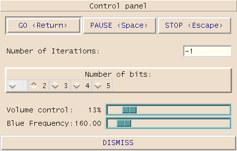
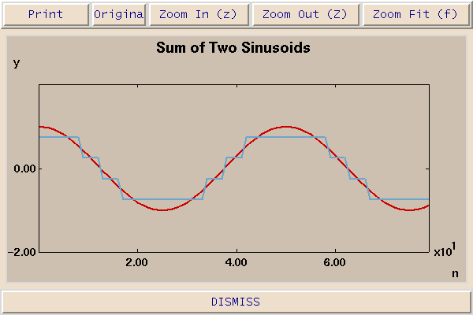

In this demonstration, we run a program that generates a sine wave and quantizes it to some number of bits. The control panel for the program is as follows:

The sine wave quantized to two bits (four levels) looks like this:

The sound is noisy at fewer than 5 bits, but fairly accurate at 5 bits. Notice that the frequency is identifiable even for the most coarsly quantized signal (1 bit).
In this demonstration, we listen to a speech signal quantized by varying omounts. Even with only one bit per sample, the speech signal is understandable, although it is very noisy. At six bits per sample (64 levels), the quality is quite good. In general, quantizing speech signals well is harder than quantizing sinusoids because they have more dynamic range. In other words, the signal level varies quite a bit. With fixed quantization, the quieter parts of the signal will be more coarsely quantized than the louder parts.